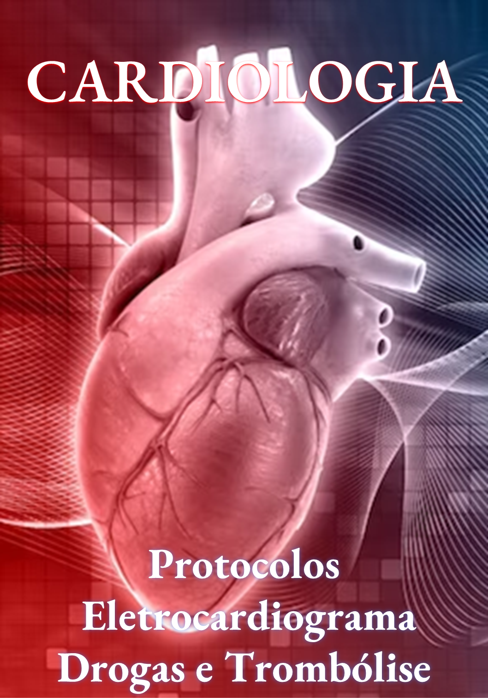
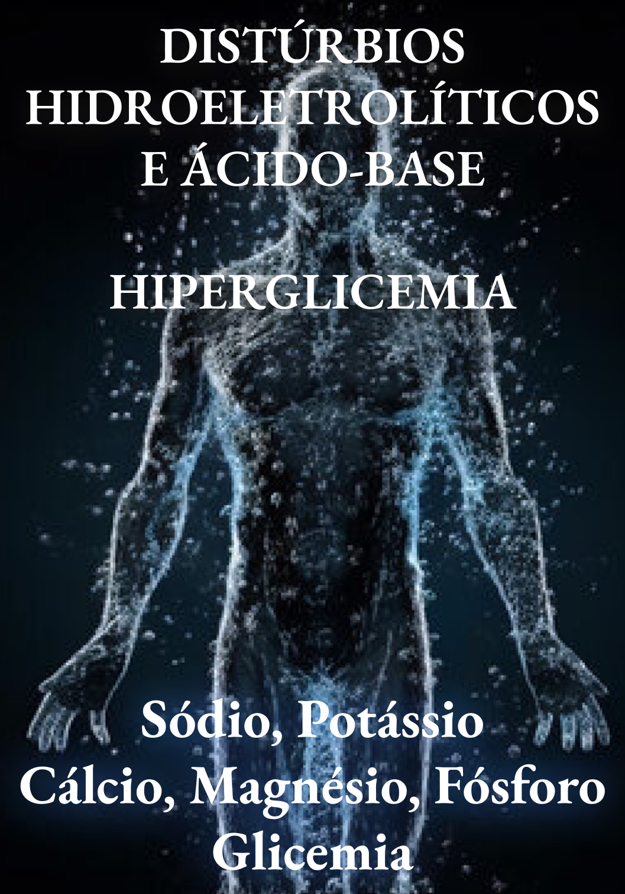
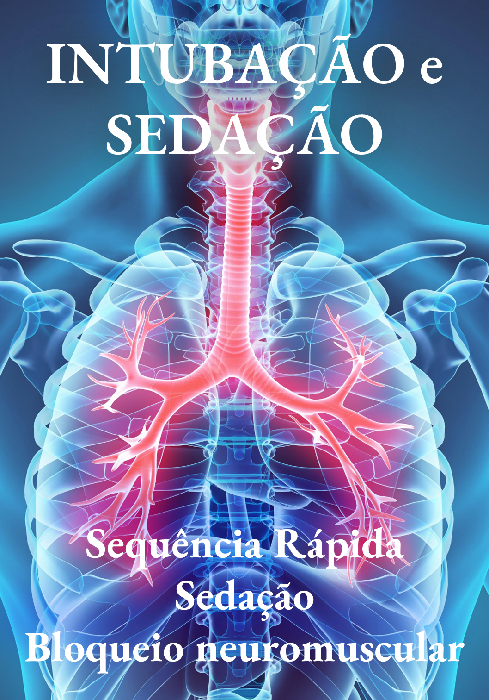

1. Protocolo Sepse HUNF (completo)
1.1 Protocolo Sepse HUNF (BAM)

2. Protocolos Cardiologia (completo)
2.2 Pocket Book ECG SUPRA ST_ IAM e Diagnóstico Diferencial
2.3 Protocolo Cardioversão HUNF (Taquiarritmias)
2.4 Protocolo Anticoagulação e Reversão Sangramento (HUNF)
2.5 TV x TSV_ Criterios Brugada, Vereckei, Santos
3. Protocolo AVC HUNF (completo)
3.1 Protocolo AVC HUNF (BAM)
3.2 Protocolo AVC (Escala NIHSS)
3.3 Controle Pressão AVC

4.1 Distúrbios do Potássio (Hipocalemia e Hipercalemia)
4.2 Distúrbios do Sódio (Hiponatremia e Hipernatremia)
4.3 Distúrbios do Magnésio (Hipomagnesemia)
5. Protocolo Cuidados Paliativos HUNF (BAM)

6. Sequência Rápida de Intubação HUNF
7. Protocolo Hemorragia Digestiva Alta (HDA)
Protocolo Dengue